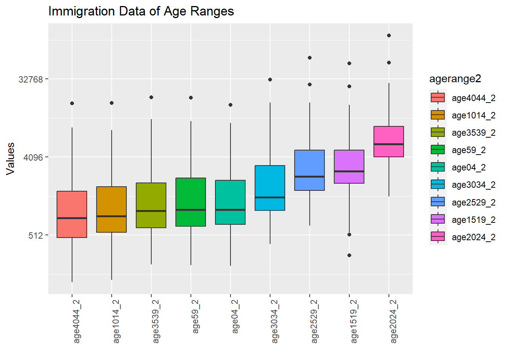

# importing necessary packages
library(tidyverse)
library(readxl)
library(readr)
library(gridExtra)
library(dplyr)
population <- read_excel("C:\\Users\\ekene\\Downloads\\DataVizards_FinalDataFrame.xlsx")
names(population) <- c('IDD','city','regionid','regions','totalpop','male','female','age04','age59','age1014','age1519','age2024','age2529','age3034','age3539','age4044','otherage','unknowns','doctorate','primaryedu','elementaryedu','highschool','literatebutnoschool','notliterate','middleschool','master','university','fertilityrate','electricity','numberofattempts','housingsalesnumbers')
region26 <- read_excel("C:\\Users\\ekene\\Downloads\\DataVizards_FinalDataFrame.xlsx", sheet = "Bolge26")
names(region26) <- c('region','region2id','workforce15plus','workforce1564','usableincome')
migration <- read_excel("C:\\Users\\ekene\\Downloads\\DataVizards_FinalDataFrame.xlsx", sheet = "Goc Bilgileri")
names(migration) <- c('IDD','male2','female2','turnbackfamily','unknowns2','betterlifecond','others','education','retirement','buyhome','familymig','finjob','maritalstatuschange','health','appointment','age04_2','age59_2','age1014_2','age1519_2','age2024_2','age2529_2','age3034_2','age3539_2','age4044_2','university2','highschool2','middleschool2', 'elementaryschool2')
# tidy migration dataset
migration$city <- population$city
migration$regions <- population$regions
tidy_data_gender <- migration |> pivot_longer(c(male2,female2),names_to = "gender2",values_to = "gender_value2")
tidy_data_causes <- tidy_data_gender |> pivot_longer(c(turnbackfamily,unknowns2,betterlifecond,others,education,
retirement,buyhome,familymig,finjob,maritalstatuschange,health,appointment),names_to = "migrationcauses",values_to = "migrationcauses_value")
tidy_data_age <- tidy_data_causes |> pivot_longer(c(age04_2,age59_2,age1014_2,age1519_2,
age2024_2,age2529_2,age3034_2,age3539_2,age4044_2),names_to = "agerange2",values_to = "agerange_value2")
last_migration_tidy_data <- tidy_data_age |> pivot_longer(c(university2,highschool2,middleschool2,elementaryschool2),names_to = "education2",values_to = "education_value2")
# tidy region26 dataset
tidy_region26 <- region26 |> pivot_longer(c(workforce15plus,workforce1564),names_to = "workforce",values_to = "workforce_values")
# tidy population dataset
tidy_data_gender2 <- population |> pivot_longer(c(male,female),names_to = "gender",values_to = "gender_value")
tidy_data_age <- tidy_data_gender2 |> pivot_longer(c(age04,age59,age1014,age1519,
age2024,age2529,age3034,age3539,age4044,otherage),names_to = "agerange",values_to = "agerange_value")
tidy_literate <- tidy_data_age |> pivot_longer(c(unknowns,literatebutnoschool,notliterate),names_to = "literate",values_to = "literate_values")
last_tidy_data_education2 <- tidy_literate|> pivot_longer(c(university,highschool,middleschool,elementaryedu,doctorate,primaryedu,master),names_to = "education",values_to = "education_value")
last_population_tidy_data <- last_tidy_data_education2 |> pivot_longer(c(fertilityrate,electricity,numberofattempts,housingsalesnumbers),names_to = "othervariables",values_to = "othervariables_value")
population$`region2id`<- ""
for (i in 1:nrow(population)) {
city <- population$city[i]
for (j in 1:length(region26$region)) {
if (grepl(city, region26$region[j])) {
population$`region2id`[i] <- paste(region26$`region2id`[j])
break
}
}
}Analysis
Now that all data preparations are complete, we can begin the process of visualization :)
library(tidyverse)
library(readxl)
library(readr)
# Migration Causes Box Plot
last_migration_tidy_data |> mutate(migrationcauses = reorder(migrationcauses, migrationcauses_value, FUN = median)) |>
ggplot(aes(migrationcauses,migrationcauses_value,fill = migrationcauses)) +
geom_boxplot() + ggtitle("Migration Causes") + xlab("Migration Causes") +
ylab("Values") + theme(axis.text.x = element_text(angle= 90, hjust = 1)) + xlab("") +
scale_y_continuous(trans = "log2") 
To have an overview of data on migration causes we plotted a box plot to see what reasons cause migration the most. Box plot shows that education is the most common reason for migration followed by migration due to a family member and better life conditions.
When plotting the box plot we scaled y values to log2 scale to see the distribution better and we ordered the box plots to make it easier to understand which are the most and the least causes of migration.
region_plot <- last_migration_tidy_data |> select(migrationcauses,migrationcauses_value,regions) |>
ggplot(aes(migrationcauses,migrationcauses_value)) + geom_point(aes(color = regions)) +
ggtitle("Regions and Reasons for Migration") + xlab("Migration Causes") +
ylab("Migration Values") + theme(axis.text.x = element_text(angle= 90, hjust = 1)) + xlab("") + scale_y_continuous(trans = "log2")
print(region_plot)When we analyze migration reasons on a regional basis, we observe that under the category of ‘different reasons,’ the highest migration has occurred to the Marmara region. Following the Marmara region, the second-highest migration took place to the Central Anatolia region. This drew our attention to a few points. We had expected that the highest migration due to retirement would be to the Mediterranean or Aegean regions, but it turned out that the majority of migration happened to the Marmara region.
city_plot <- last_migration_tidy_data |> filter(city %in% c("Ankara","D0stanbul","D0zmir","Antalya","Trabzon","AD rD1","E
anlD1urfa")) |> select(migrationcauses,migrationcauses_value,city) |>
ggplot(aes(migrationcauses,migrationcauses_value)) + geom_point(aes(color = city)) +
ggtitle("Metropolitan Cities and Reasons for Migration") + xlab("Migration Causes") +
ylab("Migration Values") + theme(axis.text.x = element_text(angle= 90, hjust = 1)) + xlab("") + scale_y_continuous(trans = "log2")
print(city_plot)
While creating this graph, we included the most populous cities of each region because plotting for all 81 provinces would be quite challenging. As seen in this graph, the highest migration, due to different reasons, has been to Istanbul, followed by Ankara. What surprised us again is that the highest migration due to retirement is to D0stanbul and Ankara.”
last_migration_tidy_data |> mutate(agerange2 = reorder(agerange2, agerange_value2, FUN = median)) |>
ggplot(aes(agerange2,agerange_value2,fill = agerange2)) +
geom_boxplot() + ggtitle("Immigration Data of Age Ranges") + xlab("Age Ranges") +
ylab("Values") + theme(axis.text.x = element_text(angle= 90, hjust = 1)) + xlab("") +
scale_y_continuous(trans = "log2") 
When we look at the Immigration Data of Age Ranges, we see that the most immigration age range is 20-24. We can say that education was the highest value among the reasons for immigration and this is consistent with this. Likewise, the second place is 15-19. It can be interpreted that high school students also migrate for education. “finjob” ranks in the middle list of reasons for migration. If we consider 25-29 as the age for finding a job, we can comment that people aged 25-29 do not migrate only for the purpose of finding a job. For example, they may have migrated due to better living conditions. When we look at the graph, we see that the migration age of 40-44 migrates the least compared to other ages. In my opinion, I can conclude from the graph that people who are used to a certain order no longer want change. According to the chart, 10-14 years old is the second to last migration age range. “familymig” ranked second among the reasons for migration. I can say that there is a contradiction here.
library(tidyverse)
data <- last_tidy_data_education2 %>%
select(regions, education, education_value, fertilityrate)
education_fertility <- data %>%
group_by(regions) %>%
summarise(avg_education = mean(education_value),
avg_fertility = mean(fertilityrate))
ggplot(education_fertility, aes(x = avg_education, y = avg_fertility, label = regions)) +
geom_point(color = "blue") +
geom_text(hjust = 0, vjust = 0, size = 3, color = "black", alpha = 0.8) +
labs(title = "Education Level and Fertility Rate in Geographical Regions",
x = "Average Education Level",
y = "Average Fertility Rate") + scale_x_continuous(labels = scales::comma, breaks = seq(0, 300000, by = 50000))
From this graph, as the education level increases, the fertility rate decreases. you can see. You can also see that there are differences between geographical regions. For example, the Eastern Anatolia Region has the lowest education level and the highest fertility rate. This may indicate that the region is inadequate in terms of education and job opportunities. While it attracts attention as a region, the Marmara Region has the highest education level and the lowest fertility rate.It may prove to be attractive in terms of education and job opportunities. It appears as a region.There appears to be a negative relationship between average education level and average fertility rate. That is, as the education level increases, the fertility rate decreases. This may indicate that educated women tend to have fewer children.
library(tidyverse)
merged_data <- population %>%
inner_join(migration, by = "city") %>%
select(city, region2id, university2, highschool2, middleschool2, elementaryschool2)
merged_data_tidy <- merged_data %>%
pivot_longer(cols = c(university2, highschool2, middleschool2, elementaryschool2),
names_to = "education_level", values_to = "migration_count") %>%
group_by(region2id, education_level) %>%
summarise(total_migration = sum(migration_count, na.rm = TRUE)) %>%
ungroup()`summarise()` has grouped output by 'region2id'. You can override using the
`.groups` argument.sorted_regions <- merged_data_tidy %>%
group_by(region2id) %>%
summarise(total_migration = sum(total_migration, na.rm = TRUE)) %>%
arrange(desc(total_migration)) %>%
pull(region2id)
merged_data_tidy$region2id <- factor(merged_data_tidy$region2id, levels = sorted_regions)
ggplot(merged_data_tidy, aes(x = region2id, y = total_migration, fill = education_level)) +
geom_bar(stat = "identity", position = "stack") +
labs(title = "Migration Distribution by Education Levels for 26 Regions",
x = "Regions",
y = "Number of People Immigrating",
fill = "Education Levels") +
theme(axis.text.x = element_text(angle = 45, hjust = 1)) +
scale_fill_brewer(palette = "Set3") +
scale_y_continuous(labels = scales::comma)
It is seen that immigrants with high education levels mostly migrate to regions numbered TR10, TR51 and TR42. These regions cover the northwestern, western and southwestern regions of Turkey. It may indicate that these regions are more attractive in terms of education and job opportunities. It is seen that immigrants with low education level mostly migrate to TR81, TR82 and TRA2 regions. These regions cover the northeastern, eastern and southeastern regions of Turkey. It may indicate that these regions are poorer in terms of education and job opportunities. It may indicate that other Regions are average in terms of education and job opportunities.
library(tidyverse)
merged_data <- inner_join(population, migration, by = "city") %>%
select(city, region2id, university2, doctorate, highschool2, elementaryschool2, finjob)
education_migration <- merged_data %>%
pivot_longer(cols = c(university2, doctorate, highschool2, elementaryschool2),
names_to = "education_level", values_to = "migration_count") %>%
mutate(
education_level = case_when(
education_level == "university2" ~ "University",
education_level == "doctorate" ~ "Doctorate",
education_level == "highschool2" ~ "High School",
education_level == "elementaryschool2" ~ "Elementary School",
TRUE ~ as.character(education_level)
)
)
ggplot(education_migration, aes(x = education_level, y = migration_count, fill = education_level)) +
geom_boxplot() +
labs(title = "Migration by Education Level",
x = "Education Level",
y = "Migration Count",
fill = "Education Level") +
theme_minimal() + scale_y_continuous(labels = scales::comma)
On the x axis, there are four education levels: doctorate, primary school, high school and university. On the Y axis, the number of people migrating is shown with values ranging from 0 to 100,000. In the graph, the number of migrations of individuals at doctoral or primary school level is much less than that of individuals at high school and university levels. In the graph, the highest number of migrations is seen among individuals at university level. This is followed by individuals at the high school level. It is seen that individuals with a higher level of education migrate less than individuals with a lower level of education. This may indicate that individuals with higher levels of education are more dependent on working conditions or find fewer job opportunities. It is seen that individuals with low education levels migrate more than individuals with high education levels. This may indicate that individuals with lower levels of education strive more to improve their living conditions or are under more pressure.
Back to top